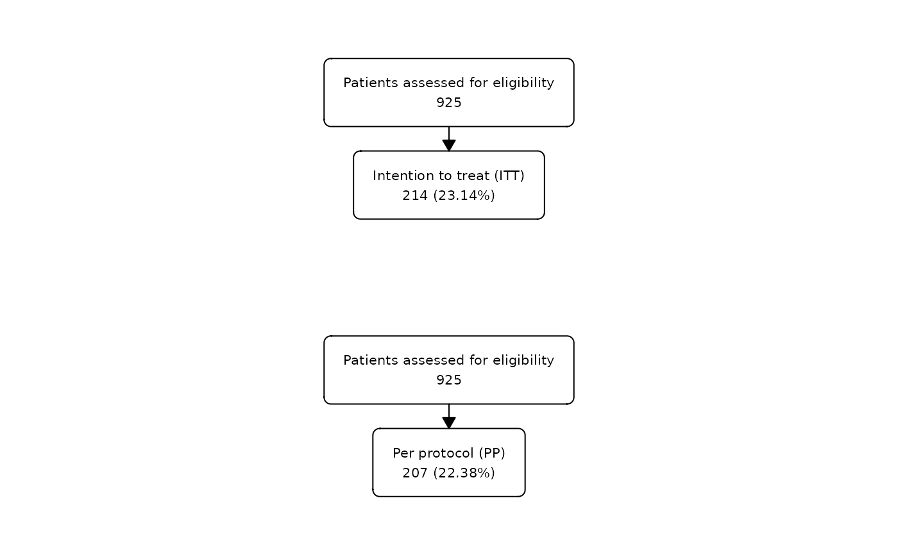

This function allows to combine vertically two different flowcharts.
Value
List containing a list with the datasets belonging to each flowchart and the flowchart parameters combining all the flowcharts.
Examples
# Create first flowchart for ITT
fc1 <- safo |>
as_fc(label = "Patients assessed for eligibility") |>
fc_filter(itt == "Yes", label = "Intention to treat (ITT)")
# Create second flowchart for PP
fc2 <- safo |>
as_fc(label = "Patients assessed for eligibility") |>
fc_filter(pp == "Yes", label = "Per protocol (PP)")
list(fc1, fc2) |>
fc_stack() |>
fc_draw()
